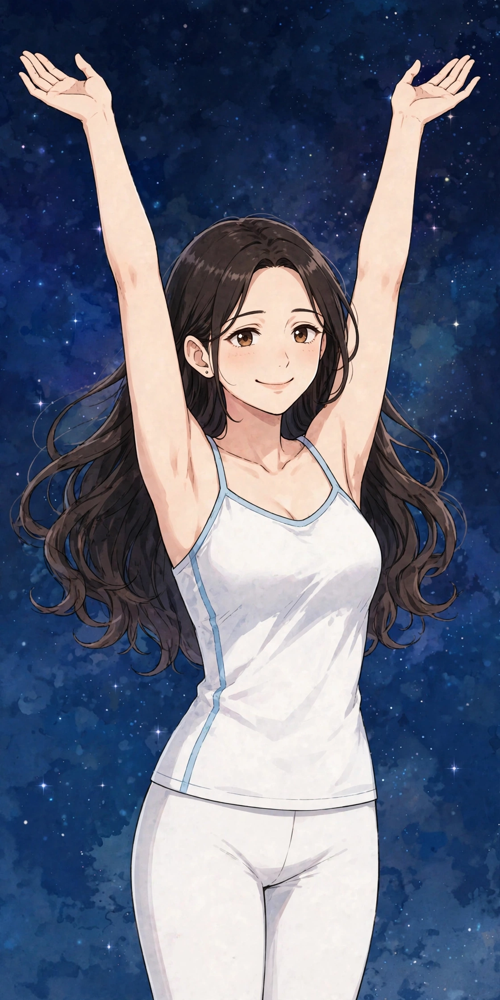

新大阪で全身のリフレッシュケア疲れ・だるさ

大きな不調があるわけではないけれど、なんだか体が重くて気分も上がらない。そんなときに必要なのは、治療ではなく切り替えの時間かもしれません。旅行の前日に体を整えておきたい方、出張から戻って気持ちをリセットしたい方、休日の過ごし方を充実させたい方。新大阪という旅の出発点にあるサロンとして、ステラカストル新大阪では全身をほぐして巡りを動かす、リフレッシュのためのケアをご用意しています。
東洋医学から見た考え方
体が重く感じる背景には、筋肉のこわばりや巡りの滞り、呼吸の浅さなどが関係していると考えられています。同じ姿勢と緊張が続く日常では、体は少しずつ縮こまり、動くこと自体が億劫になりがちです。東洋医学では、巡りが動くことで気分も動きやすくなると捉え、全身の通り道を整えることを大切にします。オイルマッサージの心地よい刺激と、美容整体による姿勢への働きかけを組み合わせることで、体を動かしやすい状態を目指します。リフレッシュは贅沢ではなく、疲れをため込みすぎないための予防的な時間でもあります。重くなりきる前に体をゆるめる習慣を持つことが、忙しい日常を続けるうえでの土台になります。
関係する部位の目安は、図1のとおりです。
図1｜リフレッシュで軽くしたい全身（正面）

当店でのケア
おすすめ：オイルマッサージ＋美容整体
ステラカストル新大阪のリフレッシュケアは、全身のオイルマッサージと美容整体を組み合わせた90分10,000円（税込）のコースです。頭から足先までまんべんなくほぐし、施術後に体が軽く感じられるような時間を目指します。新大阪で仕事帰りに立ち寄れる夜の時間帯（17:00〜22:00）ですので、休日前夜の切り替えや、旅行・出張から戻った日の締めくくりにもご利用いただけます。不調のケアではなく、自分のためのご褒美時間としてもどうぞ。記念日や自分へのご褒美としてのご利用も歓迎しています。施術内容の希望があれば、予約時にお知らせください。
ご自宅でのセルフケア
自宅でのリフレッシュには、体を温める入浴と軽いストレッチの組み合わせがおすすめです。お気に入りの香りの入浴剤やオイルを使い、五感から切り替えを意識しましょう。休日は御堂筋線で一駅先まで出て歩くなど、いつもと違う景色に触れることも気分の切り替えになります。デジタル機器から離れる時間を30分でも作ると、頭の疲れが和らぎやすくなります。小さな切り替えを日常に散りばめることが、リフレッシュを続けるコツです。
セルフケアで意識したい場所と動きは、図2のとおりです。
図2｜気分を切り替えるセルフケア（背面）

キーワード：リフレッシュご褒美全身癒し
全身のリフレッシュのケアは90分 10,000円（税込）。ご予約はLINE公式アカウントから承っています。